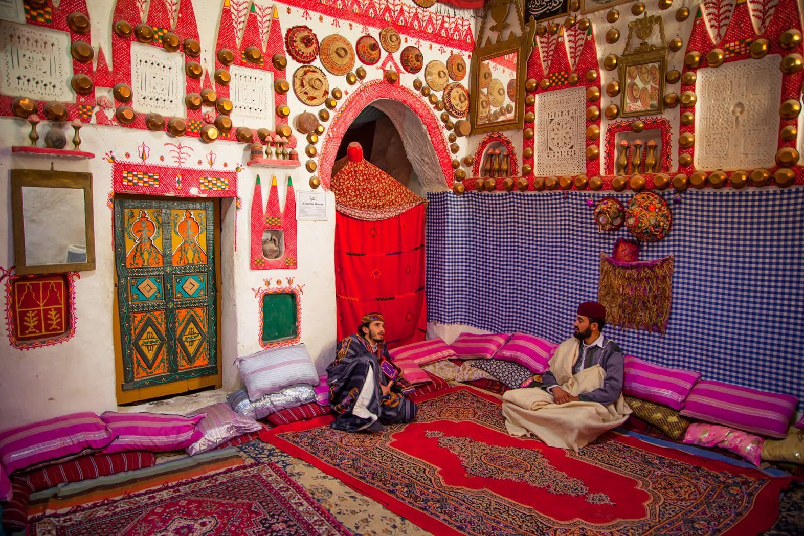
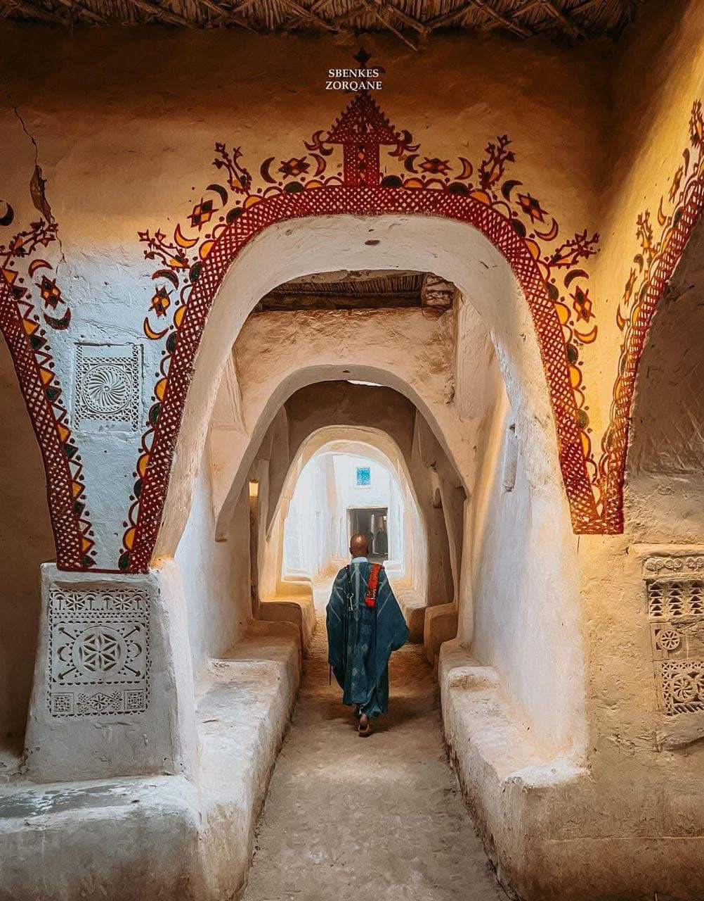
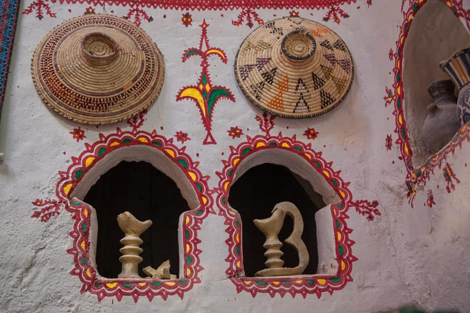
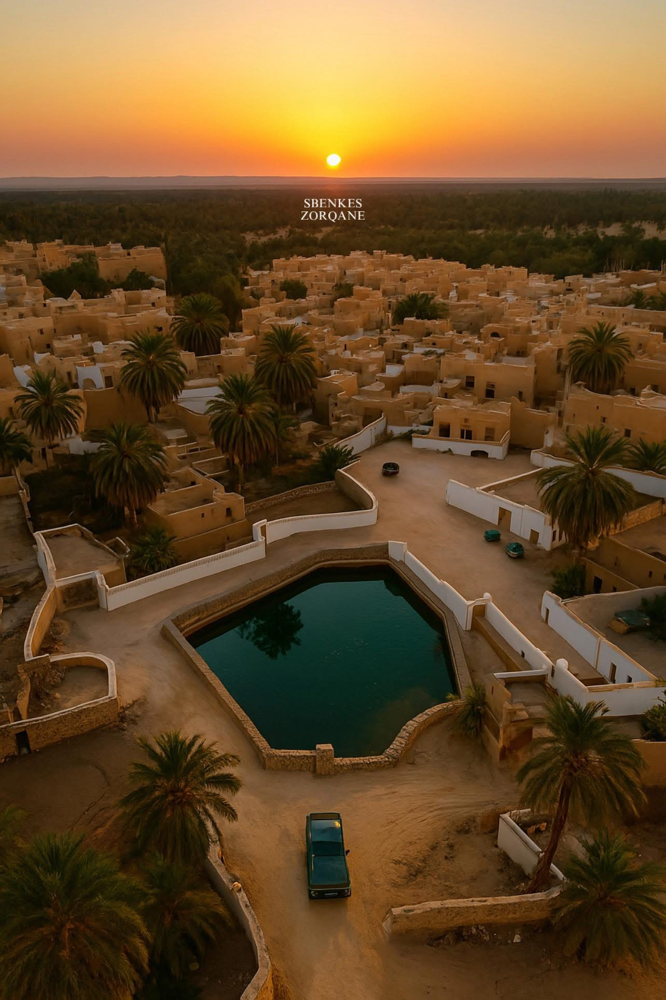
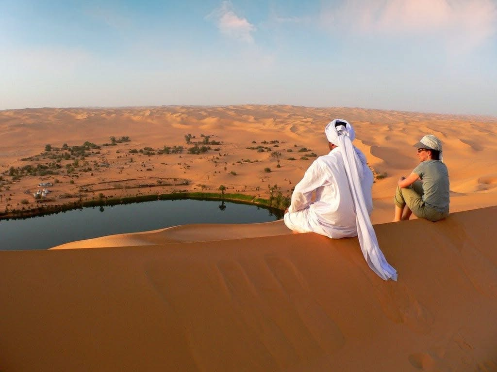
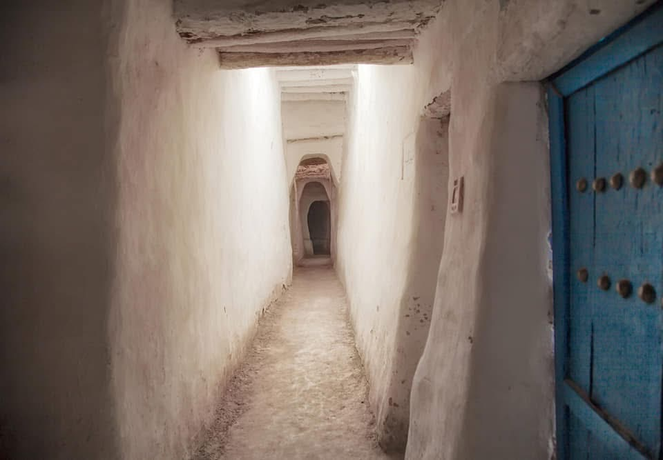
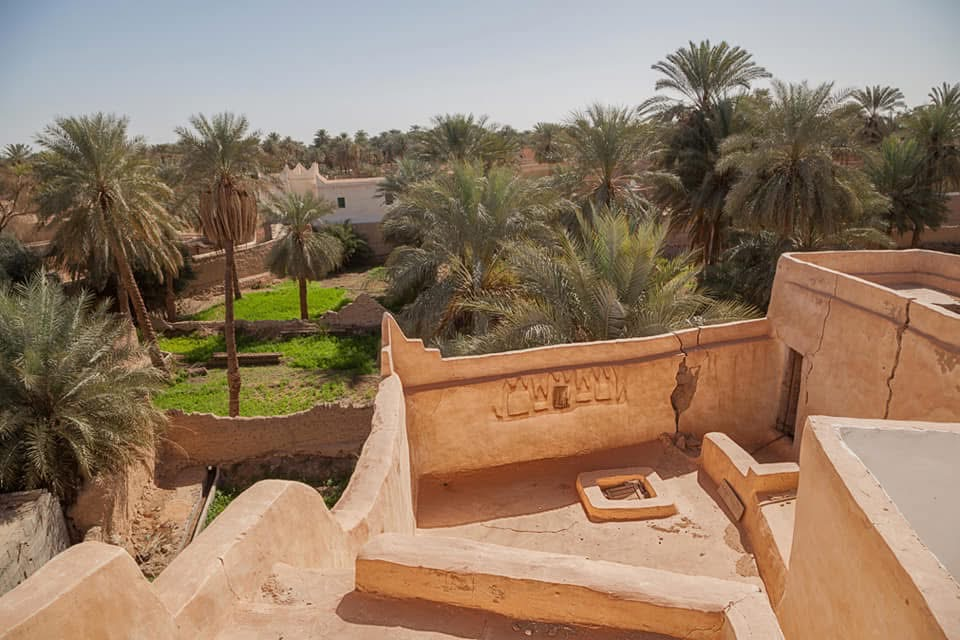

نقطة الانطلاق
طرابلسالمدة
3 أياموسائل التنقل
حافلة كبيرةالعدد
6-12 شخصالسعر للشخص الواحد
1000 دينار ليبييشمل
- النقل من وإلى طرابلس وغدامس
- مرشد سياحي مختص
- تنظيم كامل للرحلة
- تسجيل الدخول إلى الفندق / النزل
لا يشمل
- الغداء والعشاء (باستثناء الأنشطة المحددة)
- مصاريف شخصية أو هدايا تذكارية
اليوم الأول – طرابلس → غدامس
عرض التفاصيل- 06:30 – الانطلاق من طرابلس
- 08:30 – توقف عند مدينة غريان: صور واستراحة قصيرة
- 10:30 – توقف عند الواحات الصحراوية: تصوير واستكشاف الطبيعة
- 12:00 – استراحة غداء خفيفة على الطريق
- 14:30 – الوصول إلى غدامس
- 15:00 – تسجيل الوصول في الفندق / النزل
- 16:00 – جولة تمهيدية في المدينة القديمة
- 18:00 – غروب الشمس على الواحة + تصوير
- 19:00 – عشاء تقليدي
- 21:00 – المبيت
اليوم الثاني – استكشاف غدامس
عرض التفاصيل- 07:30 – إفطار
- 08:30 – زيارة المدينة القديمة: الأزقة، المعمار الطيني، المعالم التاريخية
- 11:00 – زيارة متحف غدامس (اختياري)
- 12:30 – استراحة غداء
- 13:30 – جولة في الواحات المحيطة وتصوير الطبيعة الصحراوية
- 16:30 – زيارة الحرف اليدوية التقليدية للسكان المحليين
- 18:30 – العودة للفندق
- 19:00 – عشاء تقليدي
- 21:00 – المبيت
اليوم الثالث – غدامس → طرابلس
عرض التفاصيل- 06:30 – إفطار مبكر
- 07:30 – جولة خفيفة حول المدينة للتصوير والتعرف على الصحراء
- 09:00 – الانطلاق نحو طرابلس
- 11:00 – توقف عند الواحات أو النقاط الطبيعية الجميلة على الطريق
- 13:00 – استراحة غداء قصيرة
- 16:00 – توقف سريع في غريان للصور والاستراحة
- 18:30 – الوصول إلى طرابلس + نهاية الرحلة
لقطات من الرحلة







